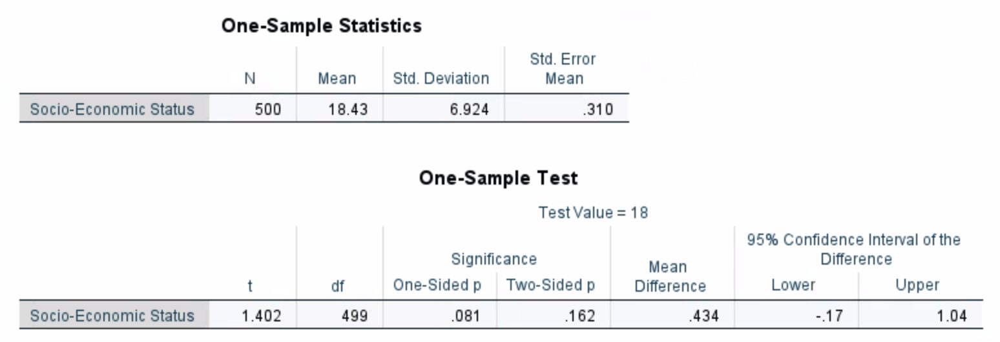
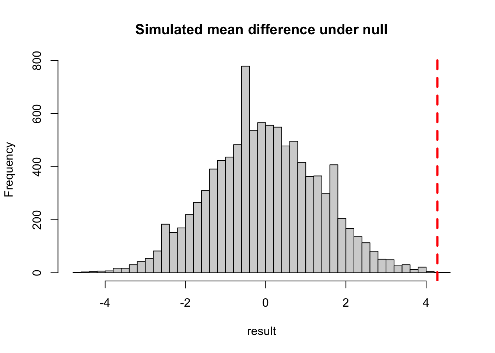

This question is related to the measure of streakiness that we did in class. You can find sample code linked on Moodle.
Write down a sequence of binary data that is meaningful to you (e.g., can be based on real data, like the seasonal record of your favorite sport team; or made up data).
For the sequence in (a), use the sample code to obtain the \(B_{10}\) value. Recall that if \(B_{10}>1\), your data is considered streaky. Is your data streaky based on this criteria?
We should not draw a conclusion only based on \(B_{10}\) since this value, calculated from data, could be due to random chance. To that end, perform a simulation and report the empirical p-value for \(B_{10}\). Draw a conclusion based on the p-value.
Show solution
Refer to the Lecture 8 sample code. For example, the sequence representing Phoenix Sun’s seasonal record has a \(B_{10}\) value of 1.17, but the empirical p-value is around \(0.3\), meaning that the detected streakiness is not statistically significant and could be due to random chance.
In a certain population, the SES (social-economic score) follows a normal distribution with mean\(=\mu\) (unknown) and SD\(=6.9\). We want to test if \(\mu\) is significantly higher than 18. In this case, the null hypothesis is \(\mu=18\) and the alternative hypothesis is \(\mu > 18\). For the data, you conduct a survey of \(n=500\) participants and record their SES scores. The sample mean is \(\bar{X} = 18.43\), with a sample standard deviation \(s=6.924\).
The test statistics is calculated as \(t = \frac{\bar{X} - 18}{s/\sqrt{500}}\). Calculate the observed test statistic based on your data (i.e., you just need to plug in the values of \(\bar{X}\) and s).
If the null hypothesis is true (\(\mu=18\)), what is the distribution of the test statistic t? Recall that this is called the reference distribution. Carry out a simulation as follows: randomly sample \(n=500\) SES scores from a normal distribution with mean \(\mu=18\) and SD\(=6.9\) (i.e., this is the distribution under the null hypothesis); calculate the test statistic value t as defined in (a) (hint: you need to calculate the sample mean and sample SD based on your simulated data); repeat for a large number of times, recording the value of t each time. Plot a histogram of the 10000 simulated t values as an estimate of the reference distribution.
Based on your histogram, comment on whether the actual observed value of t in (a) is considered ``unusual.” What is the p-value of this hypothesis testing? Draw a conclusion based on the p-value.
Note: this example is based on a real dataset called NELS and we can obtain a p-value without using simulation by performing a “one-sample t-test.” Your empirical p-value should be similar to the one-sided p-value given in the screenshot.

Show solution
# a(18.43-18) / (6.924/sqrt(500))
[1] 1.388662
# bnsim=10000result=rep(NA,nsim)for(i in1:nsim){ mysample =rnorm(500, mean=18, sd=6.9) result[i]= (mean(mysample) -18)/(sd(mysample)/sqrt(500))}hist(result,probability = T, main='Reference distribution',xlab='Simulated t values') # simulated distributioncurve(dt(x,df=499),add=T,col='red') # (optional) true distribution is a t distribution
Suppose you flip a coin for 10 times and get HHHTHHHHTH. Do you think we have enough evidence to say that this is a biased coin? In this case, the null hypothesis is that the coin is not biased (i.e., \(P(head) = 0.5)\)), and the alternative hypothesis is that the coin is head-biased (i.e.,\(P(head) > 0.5\)). The test statistic is the number of heads out of 10 flips.
What is the reference distribution in this case? You can either specify the exact distribution, or use a simulation to estimate the distribution.
What is the empirical p-value for the data HHHTHHHHTH? What is the conclusion based on the p-value?
Show solution
The reference distribution is the number of heads out of 10 flips when you flip a fair coin, which is a binomial distribution. The p-value is the probability that you get 8 or more heads under the reference distribution. The p-value in this case is slightly above 0.05, so we do not have enough evidence to say that this is a biased coin.
nsim=10000result=rep(NA,nsim)for(i in1:nsim){# flip coin 10 times; 1=head coin=sample(c(0,1),size=10,replace=T)# store the number of heads each time result[i]=sum(coin==1)}### estimated probabilities based on simulationtable(result)/nsim
### empirical p-value with adjustment(sum(result>=8)+1)/(nsim+1)
[1] 0.05189481
In an experiment, researchers test if drinking beer attracts mosquitoes. Participants were randomly assigned to two groups: 25 participants drank a liter of beer; 18 participants drank a liter of water. Mosquitoes were caught in traps as they approached the participants. The number of mosquitoes of the two groups are provided below.
The null hypothesis is that there is no difference between the two groups, and the alternative hypothesis is that drinking beer attracts mosquitoes. From the data, we see that, on average, the beer group attracts 4.38 more mosquitoes than the water group. This mean difference is our test statistic.
mean(beer) -mean(water)
[1] 4.377778
To estimate the reference distribution, we will simulate the test statistic under the null hypothesis (no difference) as follows: gather the 43 data values from both groups and re-randomize (without replacement) the values into Beer and Water groups (sample sizes remain the same). Calculate the new mean difference after re-randomization. Repeat for nsim=10000 times, recording the mean difference each time. Plot a histogram of the 10000 simulated mean differences as an estimate of the reference distribution.
Based on your histogram, comment on whether the actual observed mean difference (4.38) is considered ``unusual.” What is the p-value of this hypothesis testing? Draw a conclusion based on the p-value.
Show solution
From the simulation, we see that a mean difference of 4.38 is extremely unlikely to happen by random chance. The p-value is the probability that the mean difference is greater than 4.38, which is estimated by the proportion of the simulated mean differences that are greater than 4.38. The p-value is very small (< 0.01) and we reject the null hypothesis. The conclusion is that we have enough evidence to say that drinking beer does attract mosquitoes.
nsim=10000result=rep(NA,nsim)for(i in1:nsim){# resample, then assign the first 25 values to the beer group # and the remaining 18 values to the water group resample=sample(c(beer,water),replace=F) beer.new=resample[1:length(beer)] water.new=resample[(length(beer)+1):length(resample)]# record the mean difference each time result[i]=mean(beer.new)-mean(water.new)}# summarize resulthist(result,nclass=50,main='Simulated mean difference under null')abline(v=4.28,col='red',lty='dashed',lwd=3)

### empirical p-value with adjustment(sum(result>=4.28)+1)/(nsim+1)